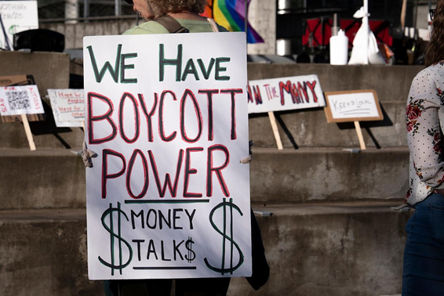
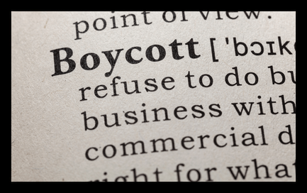
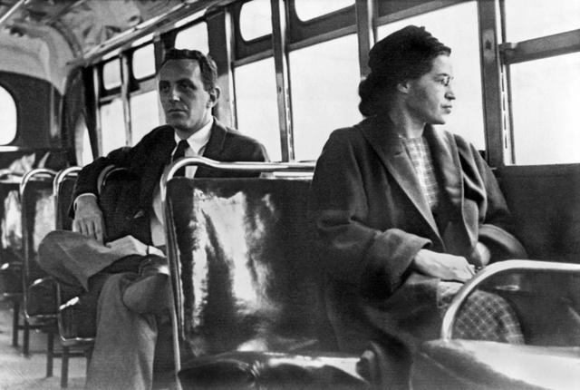
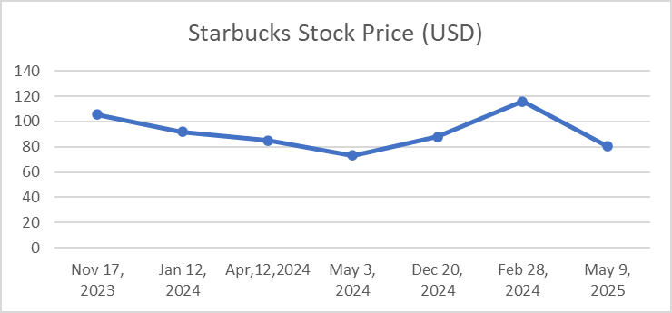
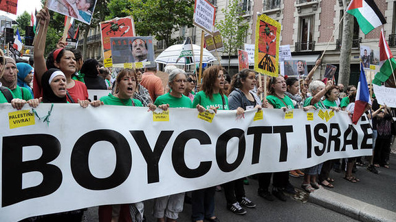

Recently, we have been witnessing people gather to respond to situations they consider unjust, not only with banners in the streets but also through the consumption decisions they make in daily life—a practice called boycotting. The global response to the situation in Palestine, for example, has seen a marked increase in consumer boycotts targeting companies and products associated with the Israeli state. This movement has united people worldwide across boundaries, creating a collective stance against what many see as an unjust situation rooted in war and humanitarian crises.
Similarly, recent political issues in Türkiye have caused significant public reaction, encouraging citizens to make conscious decisions about their consumption habits as a new form of protest. While both movements use similar tools of resistance, the motivations differ—one emerges from international solidarity in the face of conflict, while the other stems from domestic political unrest and government-related controversies.
What is Boycotting?
Boycotting is defined as "an organized practice of consumer power that discourages the purchase of a product as an effort to influence a problem with the buyer and the organization that caused the problem to arise" (Smith, 1990). A boycott aims to create economic pressure on the targeted party to bring about a specific change. The concept has historical roots dating back to Captain Charles Cunningham Boycott, who lived in the early 19th century. When Captain Boycott, who oversaw lands of an earldom in Ireland, increased the rent he collected, the community did not shop with him, cut off all communication, and eventually, the rent collectors accepted their demands.

Although it entered literature with the Charles Boycott events in the 19th century, the economic boycott movement is known to extend as far back as ancient times. While these ancient protests weren't based on consumption like today's boycotts, they share similarities in their main goal of creating economic and political pressure.
Boycott movements can express themselves through consumption, production boycotts with labor strikes, or institutional boycotts where one institution refuses to do business with another.
Boycott movements can express themselves not only through consumption but also in the form of production boycotts with labor strikes or institutional boycotts, where one institution refuses to do business with another. There are also cases of international isolation. A recent example is Russia: after the war in Ukraine, Russia was banned from international sports events, and various trade restrictions were imposed.
Historic Examples: Power and Impact
The Montgomery Bus Boycott, one of the most successful examples of boycotts in history, represents a pivotal moment for civil society in the US during the mid-1950s. Activists undertook a 381-day boycott of buses in protest against discrimination that prevented Black passengers from sitting in the front seats. The boycott, sustained through alternative transport methods, highlighted that racial discrimination is against the law and led to meaningful legal change.

Another significant example is the boycott of British goods in India from 1905 to the 1940s—the Swadeshi Movement—which had notable economic impacts. During this period, British imports to India dropped by approximately 20–25%, directly affecting British industrial revenues. Simultaneously, the movement boosted the growth of indigenous industries such as textiles and crafts, creating local jobs and driving economic autonomy. For the British economy, this decline resulted in significant losses, costing millions and alarming industrialists. The campaign transformed colonial trade and paved the way for India's economic nationalism.

Numerous studies indicate that boycotting imported goods significantly changed the economic environment for local manufacturing and foreign products. The boycott shifted consumer demand from foreign goods to domestic products, contributing to the expansion and development of domestic production.
Contemporary Boycotts and Modern Complexities
India's recent decision to boycott Turkish goods and services demonstrates how boycotts can emerge as a geopolitical response. Following increased tensions in the Kashmir region, Türkiye's political and military cooperation with Pakistan came under heavy criticism in India. In response, the Indian government and various civil society organizations acted, including imposing restrictions on agricultural imports, canceling agreements between Turkish Airlines and IndiGo, and suspending the operations of the Turkish ground-handling company Çelebi at several major airports. Several Indian universities also froze academic collaborations with Turkish institutions, citing national security concerns. While Türkiye and India are not major trading partners, this case highlights how diplomatic and strategic alignments can quickly spill over into the economic dimension, leading to socially driven boycott movements.

However, sustaining economic boycotts can be challenging over time. They require careful organization and the availability of alternative products and services. During a boycott, a person may not want to join and face consequences, yet later wish to gain the results. This situation is called "free riding," and it eliminates the success of the economic boycott movement. Beyond simply choosing not to buy, it is crucial to discredit the targeted companies, as this can effectively diminish their stock value and strengthen the boycott's effectiveness.
Economic Effects on Companies
Companies are affected by boycotts not just by lowered consumer demand but also by reputational harm and reduced shareholder value. Research shows that when people stop buying certain products, company stock values decline. This demonstrates that whether people stop buying or simply declare they will not buy, a company's stock value falls. In the US, boycotts have impacted the economic performance of major corporations like Walmart and Starbucks.
Following the Israel-Palestinian war, there was a significant decline in consumer demand for Starbucks in late 2023 and early 2024. While the company did not explicitly attribute this to the boycott, Starbucks reported that shares dropped by almost 23% in early 2024.

The financial impact of boycotts varies for different companies. Firms with high debt and strong profits are usually better protected from the negative effects of boycott announcements. However, companies that invest heavily in advertising and operate in competitive markets often face bigger losses when a boycott happens, as consumers may switch to rival brands. These financial challenges have pushed some companies to change their business practices to meet boycott demands, showing how consumer activism can lead to improvements in corporate social responsibility.
Looking Forward
Boycotting movements, whether in Türkiye or international conflicts like Israel-Gaza, illustrate the intersection of politics, consumer behavior, and economic outcomes. While boycotts can serve as effective non-violent tools for social and political change, they also carry risks of economic disruption. Understanding the economic impact of boycotts requires a multidisciplinary approach, considering consumer psychology, political contexts, and economic data. Although the recent outcomes—both economic and social—will be better analyzed in coming years, future research should focus on quantifying long-term effects and exploring strategies to mitigate negative economic consequences while respecting the rights of consumers to engage in political expression.
Selected references
- Balıkçıoğlu, B., Koçak, A., & Özer, A. (2007). Şiddet İçermeyen Bir Eylem Olarak Dolaylı Tüketici Boykotlarının Oluşum Süreci ve Türkiye İçin Değerlendirme. Ankara Üniversitesi SBF Dergisi, 62(03), 79–100.
- BBC Türkçe. (2025, June 1). Hindistan Türkiye'ye boykot uyguluyor: THY-IndiGo anlaşması iptal edildi, Türk ürünlerine tepki büyüyor. Retrieved from https://www.bbc.com/turkce/articles/c1mg52mm4v4o
- Lasarov, W., Hoffmann, S., & Orth, U. (2023). Vanishing boycott impetus: Why and how consumer participation in a boycott decreases over time. Journal of Business Ethics, 182(4), 1129–1154.
- Levesque, A., & Nam, J. (2019). The effect of consumer boycotting on the stock market. Honors College Theses, 235.
- Stojanovic, A. (2024, July 2). Here's how much Starbucks stock fell due to Israel-Hamas boycott. Finbold.
- Shah, S. A., Raza, Q., Rajar, H. A., Baig, M. T., Mithiani, S. A., Ahmed, M., Shoaib, M., & Malik, S. (2024). Consumer behavior and preferences shift: The impact of boycotting imported brands on local product demand. Bulletin of Business and Economics (BBE), 13(2), 455–467.